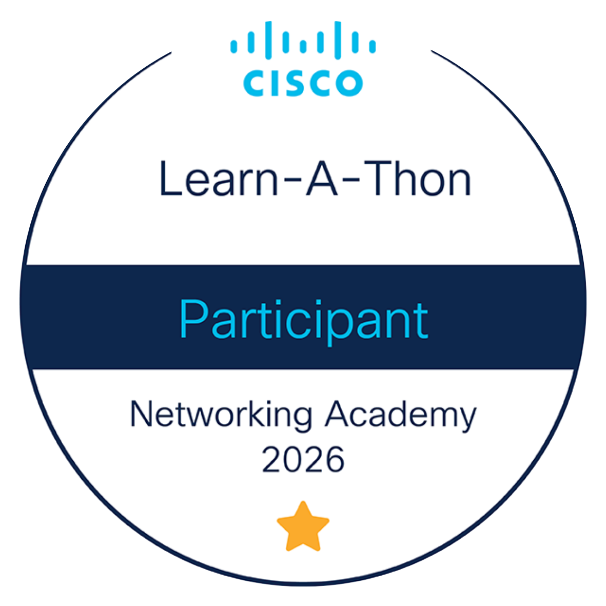

Mes Certifications
Reconnaissances officielles et professionnelles.
CCNA 1 : Introduction to Networks
Cisco Networking Academy
Validation des compétences fondamentales en réseaux : architecture des modèles OSI et TCP/IP, adressage IPv4/IPv6, conception de réseaux locaux (LAN) et configuration initiale des routeurs et commutateurs Cisco.
Voir sur CredlyCertification PIX
Compétences Numériques
Validation d'un niveau avancé (Niveau 7) sur les compétences clés du numérique, notamment en résolution de problèmes techniques, gestion de données, programmation et sécurité des environnements numériques.

Cisco Learn-A-Thon 2026
Cisco Networking Academy
Participation au challenge d'apprentissage intensif Cisco. Cette distinction valide mon engagement dans la formation continue et l'acquisition proactive de nouvelles compétences techniques sur les technologies réseaux et cybersécurité.
Voir sur Credly